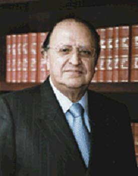

Consejero Miguel A. Quirós Pérez
Nació el 12 de enero de 1939, en Zacatlán, Puebla.
Licenciado en Derecho, egresado de la Universidad Autónoma de Puebla. Título de Tesis La Autoridad Responsable en el Juicio de Amparo.
Ha ocupado diversos cargos en la Administración Pública del Municipio y Estado de Puebla, desde auxiliar de Hacienda, Jefe de Departamento, Oficial Mayor y Sub-Tesorero General del Estado. Trabajó en la Comisión de Planeación y Promoción Económica, fue Oficial Mayor de Gobierno, Secretario General del Ayuntamiento del Municipio de Puebla, Abogado Consultor de Gobierno del Estado, Secretario de Economía, Secretario de Programación y Presupuesto, Secretario de Desarrollo Urbano y Ecología.
Presidente municipal de Puebla, Diputado Federal a la LIV Legislatura del Congreso General por el Onceavo Distrito de Puebla, Diputado Local por el Segundo Distrito y Presidente de la Gran Comisión del H. Congreso del Estado de Puebla, Diputado Federal a la LVII Legislatura por el Segundo Distrito Electoral Federal con Cabecera en Zacatlán, Puebla; Secretario de la Comisión de Gobernación y Puntos Constitucionales de la Cámara de Diputados del Congreso de la Unión, Coordinador de la Diputación Federal Poblana y Secretario Técnico de la Mesa Directiva del Senado de la República.
Coautoría del libro De Carranza a Salinas. Otras Razones en el Ejercicio del Poder en México.